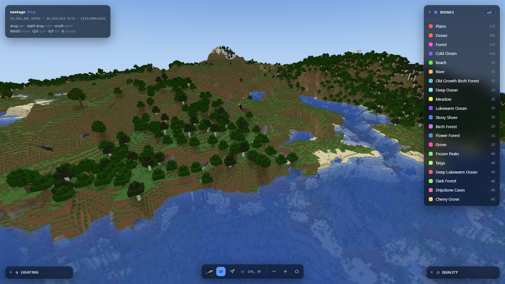

Point it at a Java save, get a 3D map in your browser a few seconds later. No upload, no mods, no gameplay plugin.

▶ launch the live viewerthe numbers
Same world, same machine, both tools start to finish.
now for multiplayer
A read-only, bounded rendering sidecar beside your Java server. Your host keeps the session.